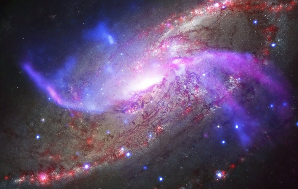
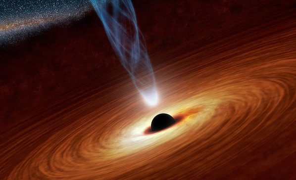
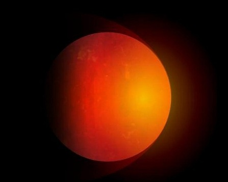
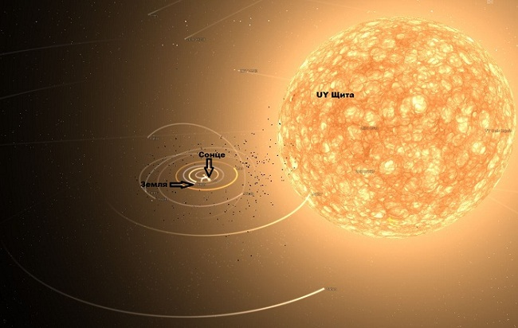
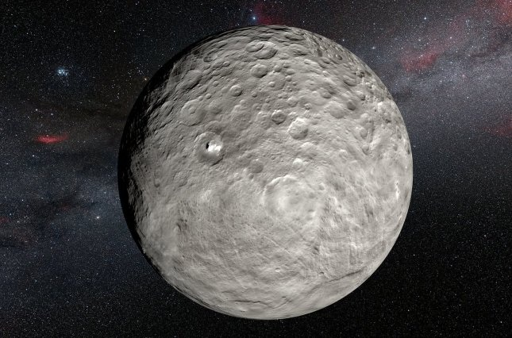
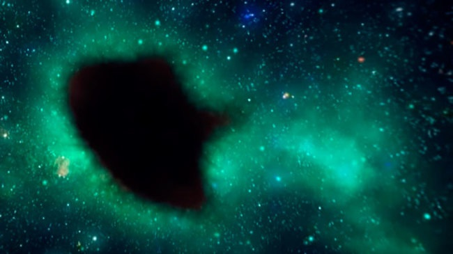
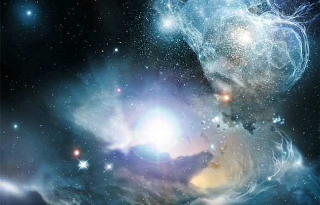
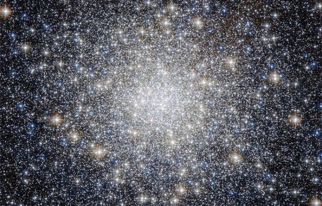
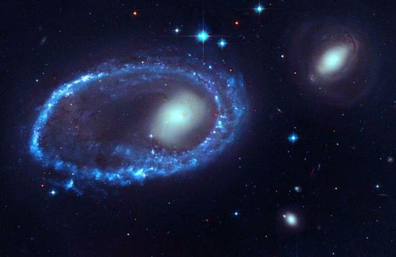
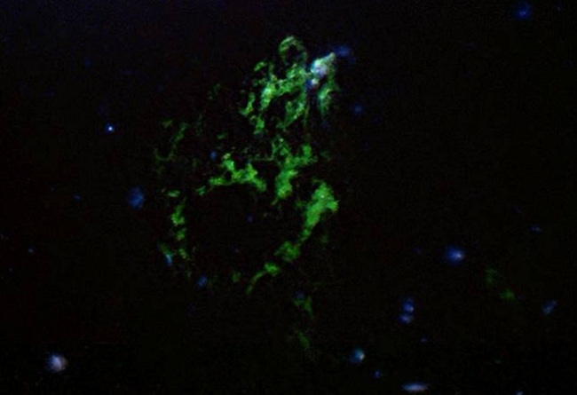

САМАЯ БОЛЬШАЯ ГАЛАКТИКА
Галактика — это гравитационно связанная между собой система из звезд и звездных скоплений, межзвездного газа, пыли и темной материи. Все объекты в составе галактики участвуют во вращении вокруг общего центра.
Например, наша галактика — Млечный путь. Все объекты в ней вращаются вокруг солнца. Млечный путь огромный — его диаметр 100 тысяч световых лет. Но по сравнению с последующей галактикой, о которой собственно и пойдет речь, Млечный путь — это просто маленькая тарелочка.
Речь идет о галактике IC 1101, что находится примерно в 1,04 млрд световых лет от Земли. Галактика была открыта 19 июня 1790 британским астрономом Уильямом Гершелем. IC 1101 является, возможно, одной из крупнейших и самых ярких галактик во Вселенной.
Как и большинство крупных галактик, IC 1101 заполняется целым рядом звезд, некоторые из которых на семь миллиардов лет старше Солнца. Диаметр IC 1101 составляет 6 млн. (!) световых лет.
САМАЯ БОЛЬШАЯ ЧЕРНАЯ ДЫРА
Черные дыры — это астрофизические объекты, которые создают настолько мощную силу притяжения, что никакие, как угодно быстрые частицы, не могут покинуть их поверхность, даже свет.
Самая большая обнаружена во Вселенной супермассивная черная дыра имеет массу, что в 10 млрд раз превышает массу солнца. Для сравнения, галактика Млечного Пути составляет от 4 до 5 миллионов солнечных масс.
САМАЯ БОЛЬШАЯ ПЛАНЕТА
TrES-4b — самая большая известная науке экзопланета (то есть та, что вращаются вокруг другой звезды или дрейфует космическим пространством), была обнаружена в 2006 году в созвездии Геркулеса и находится в 1600 световых лет от Земли.
TrES-4 является шаром, который состоит преимущественно из водорода, а ее размеры в 20 раз превышают размер Земли. Диаметр TrES-4 в 1,7 раз больше диаметра Юпитера — самой большой планеты в Солнечной системе. Температура на планете составляет около 1260 градусов по Цельсию.
CАМАЯ БОЛЬШАЯ ЗВЕЗДА
Мы все иногда любим смотреть на звездное ночное небо. С Земли звезды кажутся нам яркими крохотными крапинками, поэтому мы даже не задумываемся, что на самом деле это гиганты, крупнее нашей планеты.
UY Щита — самая большая и самая яркая известная звезда галактики Млечный Путь и Вселенной в целом. Впервые она была обнаружена немецкими астрономами в 1860 году. Это красный сверхгигант в созвездии Щита.
Средний диаметр звезды превышает диаметр Солнца в 2775 раз, то есть равен 4,02 млрд км, а ее объем, соответственно, больше солнечного в 5 млрд раз. Звезда расположена на расстоянии примерно 9500 световых лет от Земли.
САМЫЙ БОЛЬШОЙ АСТЕРОИД
Церера часто называют карликовой планетой, однако в 1850-х годах он был переклассифицирован как астероид. Он имеет сферическую форму и состоит из камня и льда и расположен в поясе астероидов, лежащиму между Марсом и Юпитером.
Диаметра Церера составляет около 950 км и является самым большим и массивные телом в поясе астероидов. Времянами Церера способна приближаться к Земле на достаточно близкое расстояние — 263 млн км.
СУПЕРВОЙДЫ — ПУСТОТЫ В КОСМОСЕ
Войд (от англ. Void — пустота) — это участок космического пространства, в котором практически отсутствуют галактики, звезды и другие скопления. Крупнейшие космические пустоты именуются супервойдамы. Войди — одни из самых больших образований в космосе, занимающие основную часть (около 50%) пространства во Вселенной. В войде возможно наличие «темной материи» и протогалактичних облаков.
Одной из самых больших пустот в космосе, которое привлекает внимание мировых ученых, является реликтовое холодное пятно или Супервойд Эридана. Его размер составляет 1,8 на 3 млрд св. лет. По утверждениям некоторых физиков, реликтовое холодное пятно может быть отражением другой вселенной за пределами нашего вызванное квантовой запутанностью между вселенными.
Профессор Университета Северной Каролины Лаура Мерсине-Хафтон считает: «Стандартная космология не может объяснить такой гигантской космической дыры … это явный отпечаток другой вселенной».
ГИГАНТСКАЯ ГРУППА КВАЗАРОВ
Группа квазаров — это самая большая из известных структур Вселенной, что представляет собой совокупность квазаров (внегалактических объектов, которые имеют звездообразные изображения и мощные эмиссионные линии с большим красным смещением в спектре).
Интересно, что квазары расположены от нас на очень больших расстояниях, и, как следствие, мы видим их далекое прошлое — отпечаток того, как они выглядели миллионы лет назад. Самые яркие квазары излучают энергии в триллион раз больше, чем Солнце.
Наибольшей группой квазаров является так называемая Huge-LQG, U1.27 — Гигантская группа квазаров, состоящая из 73 квазаров. При размере 4 млрд. световых лет, она является одной из самых больших структур в видимой Вселенной. Расположена она в созвездии Льва и имеет массу, равную 6,1 × 10 18 солнечных масс.
ВЕЛИКАЯ СТЕНА ГЕРКУЛЕСА — СЕВЕРНОЙ КОРОНЫ
Великая стена Геркулеса — Северной Короны — это огромная плоская суперструктура из галактик размером более 10 млрд световых лет, которая занимает около 10% от диаметра наблюдаемой Вселенной. Это самая крупная из крупномасштабных структур, которые сейчас известны во Вселенной.
Великая стена Геркулеса — Северной Короны представляет собой стену, состоящую из групп галактик, связанных гравитацией, протяженностью 10 млрд световых лет в длинном направлении и 7,2 млрд световых лет в другом направлении. Эта суперструктура из галактик была открыта учеными в ноябре 2013 года.
СВЕРХСКОПЛЕНИЕ ШЕПЛИ
Сверхскопление Шепли (SCl 124) — это мощное и самое больше сверхскопление галактик в наблюдаемой Вселенной. Сверхскопление представляет собой повышенную плотность распределения галактик в созвездии Центавра.
Ученым уже давно было известно, что наша галактика движется в направлении созвездия Центавра со скоростью 2,2 миллиона километров в час, но причина этого движения оставалась загадкой.
Около 30 лет назад было обнаружено, что наш Млечный путь и каждая здешняя группа галактик притягивается к сверхскоплению Шепли, что уже состоит из более чем 8 тысяч галактик общей массой в 10 тысяч раз больше, чем масса Млечного Пути. Сейчас сверхскопление Шепли находится от нас на расстоянии 650 млн световых лет.
КОСМИЧЕСКОЕ ПЯТНО
В 2006 году команда ученых-астрономов обнаружила загадочное зеленое пятно в космосе, которое получило название «Капля Лайман-альфа». Это гигантское космическое газовое облако, которое находится в южном созвездии Водолея и расположено примерно в 11,5 млрд световых лет от Земли.
Гигантское облако является самым большим в своем роде с протяженностью 300 тысяч световых лет, что в три раза больше Млечного Пути. Свет от нее добирается до Земли целых 11,5 миллиарда лет. Поскольку возраст Вселенной оценивается в 13,7 миллиарда лет, гигантская зеленая капля считается одной из самых древних конструкций во Вселенной.